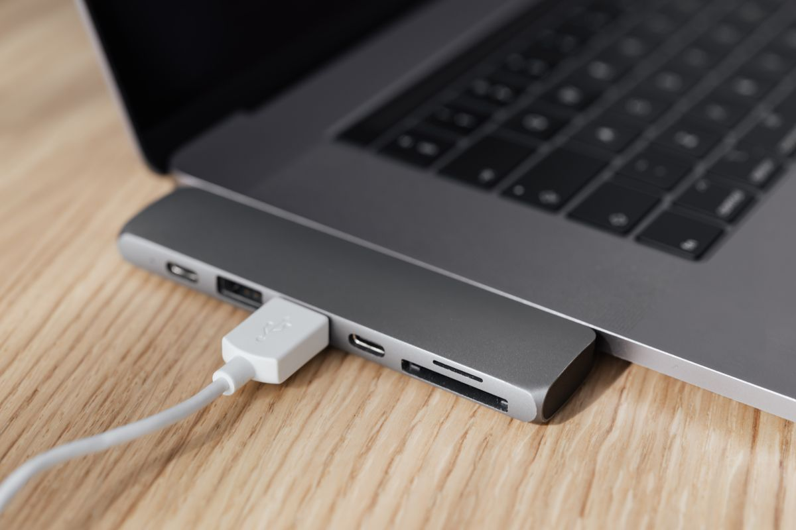
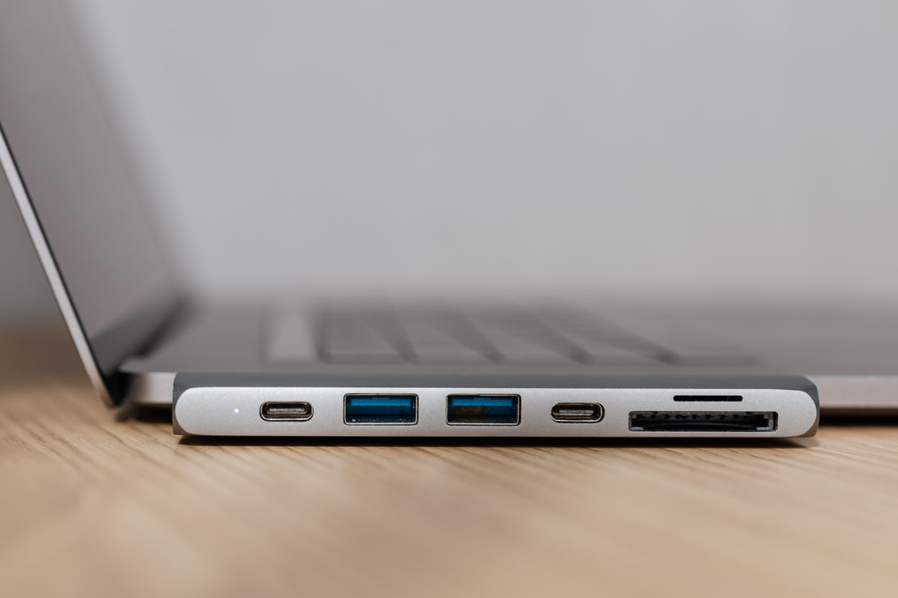
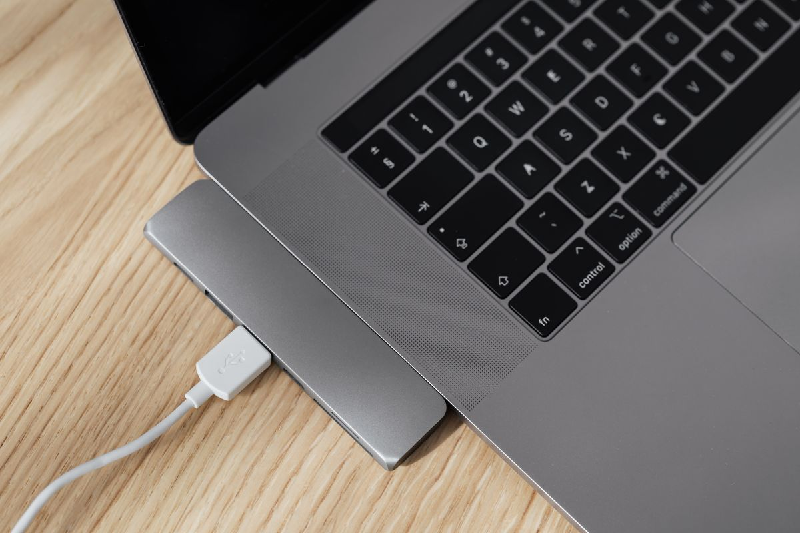
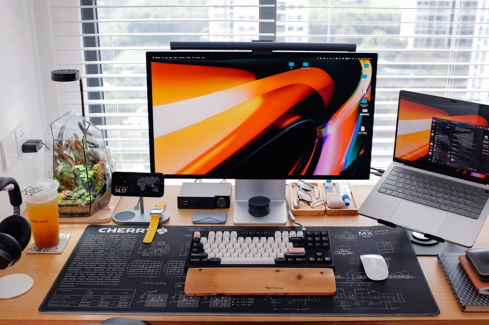
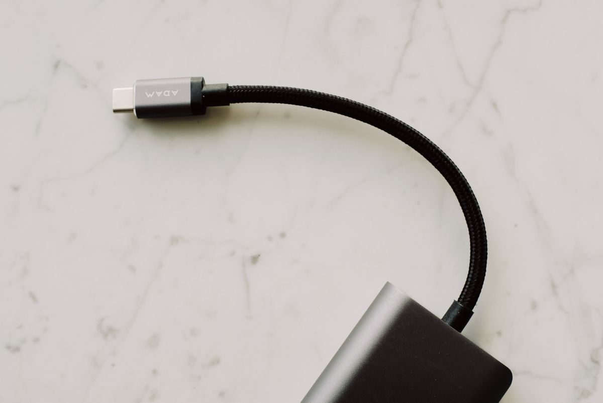

USB-C Hub ทำไมภาพ 4K ถึงกระตุก? เข้าใจสาเหตุและวิธีเลือกฮับให้จอ 4K ลื่นไม่มีสะดุด 2026
ต่อจอ 4K ผ่าน USB-C Hub แล้วภาพกระตุก? สาเหตุคือแบนด์วิดท์ไม่พอทำให้จอวิ่งแค่ 30Hz รวม 5 สาเหตุที่พบบ่อย วิธีแก้ทีละขั้น และเกณฑ์เลือกฮับให้ได้ 4K@60Hz
อัปเดต กรกฎาคม 2026
ซื้อ USB-C Hub มาต่อจอ 4K แล้วภาพกระตุก เมาส์ขยับหน่วง ๆ หรือหน้าจอไม่ลื่นเหมือนต่อสายตรง? ปัญหานี้เจอกันบ่อยมากในหมู่คน Work From Home ที่อยากต่อจอเดียวจบทุกอย่างผ่านฮับตัวเดียว หลายคนโทษว่าจอเสียหรือคอมไม่แรง แต่จริง ๆ แล้วต้นเหตุมักอยู่ที่ตัวฮับและมาตรฐานการเชื่อมต่อที่เลือกมาไม่ตรงกับความต้องการ บทความนี้จะอธิบายว่าทำไมภาพ 4K ถึงกระตุกเมื่อผ่านฮับ พร้อมวิธีแก้และเกณฑ์เลือกฮับให้จอ 4K ลื่นจริง
รากของปัญหา: 4K ที่ 60Hz กินแบนด์วิดท์มหาศาล
หัวใจของเรื่องนี้คือ "แบนด์วิดท์" การส่งภาพ 4K (3840×2160) ที่ 60Hz ต้องการแบนด์วิดท์สูงมาก ถ้าฮับหรือพอร์ตส่งได้ไม่พอ ระบบจะลดเฟรมเรตลงเหลือ 30Hz โดยอัตโนมัติ ซึ่งเป็นสาเหตุหลักของอาการ "กระตุก" ที่เห็น เมาส์จะดูเหมือนขยับเป็นช่วง ๆ ภาพเลื่อนหน้าเว็บไม่ลื่น และวิดีโอดูสะดุดตา
ที่ 30Hz ตาเราจะรู้สึกได้ชัดว่าภาพไม่ต่อเนื่อง โดยเฉพาะเวลาขยับเมาส์หรือสกรอลล์ ต่างจาก 60Hz ที่ลื่นไหลเป็นธรรมชาติ ฉะนั้นเป้าหมายของเราคือทำให้จอ 4K วิ่งที่ 60Hz ให้ได้ ซึ่งขึ้นกับหลายปัจจัยที่จะไล่ต่อไปนี้
สาเหตุที่พบบ่อย 5 ข้อ
1. ฮับรองรับแค่ 4K ที่ 30Hz ฮับราคาถูกจำนวนมากระบุว่า "รองรับ 4K" จริง แต่เป็น 4K ที่ 30Hz เท่านั้น ไม่ใช่ 60Hz ตรงนี้คือกับดักที่คนพลาดมากที่สุด ต้องอ่านสเปกให้ละเอียดว่าเขียน "4K@60Hz" หรือ "4K@30Hz"
2. พอร์ตของโน้ตบุ๊กไม่รองรับ DisplayPort Alt Mode การส่งภาพผ่าน USB-C ต้องอาศัยฟีเจอร์ชื่อ DisplayPort Alt Mode ถ้าพอร์ต USB-C ของเครื่องคุณไม่มีฟีเจอร์นี้ (พอร์ตบางตัวมีไว้แค่ชาร์จหรือโอนข้อมูล) ฮับก็ส่งภาพออกจอไม่ได้ หรือได้แต่จำกัด
3. เวอร์ชัน HDMI บนฮับต่ำเกินไป ฮับที่ใช้ HDMI 1.4 รองรับ 4K ได้แค่ 30Hz ส่วน HDMI 2.0 ขึ้นไปถึงจะได้ 4K@60Hz หากฮับใช้ชิป HDMI รุ่นเก่า ต่อยังไงก็ไม่ถึง 60Hz
4. แชร์แบนด์วิดท์กับอุปกรณ์อื่นบนฮับ เมื่อเสียบทั้งจอ, SSD, LAN, และชาร์จไฟพร้อมกันบนฮับตัวเดียว แบนด์วิดท์รวมของ USB-C อาจถูกแบ่งจนไม่พอเลี้ยงจอ 4K@60Hz ทำให้ภาพตกลงหรือกระตุกเป็นช่วง
5. สาย USB-C ไม่ได้คุณภาพ สาย USB-C ไม่ได้เท่ากันทุกเส้น สายที่ทำมาเพื่อชาร์จอย่างเดียวหรือสายคุณภาพต่ำอาจส่งสัญญาณภาพความเร็วสูงไม่ไหว ทำให้ภาพขาด ๆ หาย ๆ หรือหลุดเป็นระยะ
วิธีแก้และตรวจสอบทีละขั้น
เริ่มจากเช็กที่ตั้งค่าจอในระบบก่อน บน Windows เข้า Display Settings > Advanced display แล้วดูค่า Refresh rate ว่าตั้งได้ถึง 60Hz หรือไม่ บน Mac กด Option ค้างแล้วคลิก Scaled ในเมนู Displays เพื่อดูตัวเลือกที่ซ่อนอยู่ ถ้าเลือกได้แค่ 30Hz แปลว่าคอขวดอยู่ที่ฮับ สาย หรือพอร์ต
ต่อมาลองต่อจอตรงเข้าคอมโดยไม่ผ่านฮับ ถ้าต่อตรงได้ 60Hz แต่ผ่านฮับได้แค่ 30Hz ก็ชัดเจนว่าฮับคือปัญหา จากนั้นลองสลับสาย USB-C เป็นเส้นที่รองรับสัญญาณภาพความเร็วสูง และถอดอุปกรณ์อื่นที่เสียบบนฮับออกให้เหลือแต่จอ เพื่อดูว่าอาการดีขึ้นไหม สุดท้ายอัปเดตไดรเวอร์การ์ดจอและเฟิร์มแวร์ของฮับ (ถ้ามี) ซึ่งบางครั้งช่วยแก้ปัญหาความเข้ากันได้
เกณฑ์เลือก USB-C Hub ให้จอ 4K ลื่นจริง

ต้องระบุ 4K@60Hz ชัดเจน ข้อนี้สำคัญที่สุด อย่าซื้อจากคำว่า "รองรับ 4K" ลอย ๆ ให้มองหาสเปกที่เขียน 4K@60Hz โดยตรง ดู USB-C Hub รองรับ 4K 60Hz เป็นจุดเริ่มต้น
ใช้ HDMI 2.0 ขึ้นไป หรือ DisplayPort เลือกฮับที่พอร์ตภาพเป็น HDMI 2.0/2.1 หรือมี DisplayPort เพราะรองรับแบนด์วิดท์สำหรับ 4K@60Hz ได้จริง

รองรับ Power Delivery (PD) พาสทรู ถ้าใช้กับโน้ตบุ๊ก ควรได้ฮับที่จ่ายไฟชาร์จเครื่องผ่านตัวเองได้ (PD) เพื่อไม่ต้องเสียบสายชาร์จแยก ลองดู USB-C Hub พร้อม Power Delivery หากต้องชาร์จไปด้วย
ชิปเซ็ตคุณภาพดี ระบายความร้อนได้ ฮับที่ใช้ชิปดีและมีตัวถังโลหะช่วยระบายความร้อน จะเสถียรกว่าเมื่อใช้งานยาว ลดอาการภาพหลุดเวลาฮับร้อน

ถ้าต้องต่อสองจอ 4K ให้พิจารณา DisplayLink หรือ Thunderbolt การขับสองจอ 4K@60Hz พร้อมกันเกินขีดของฮับ USB-C ทั่วไป ควรมองหา Docking Station แบบ Thunderbolt หรือที่ใช้เทคโนโลยี DisplayLink แทน ดู Docking Station Thunderbolt สำหรับสองจอ 4K หากต้องการเซ็ตอัพหลายจอ

สาย USB-C คุณภาพดีก็สำคัญ อย่าลืมว่าสายที่ให้มาอาจไม่ได้เรื่อง การมี สาย USB-C รองรับสัญญาณภาพความเร็วสูง สำรองไว้ช่วยตัดปัญหาไปได้เยอะ
สรุป
ภาพ 4K กระตุกเมื่อต่อผ่าน USB-C Hub เกือบทั้งหมดมาจากแบนด์วิดท์ไม่พอ ทำให้จอวิ่งได้แค่ 30Hz แทนที่จะเป็น 60Hz ต้นเหตุหลักคือฮับรองรับแค่ 4K@30Hz, พอร์ตหรือ HDMI เวอร์ชันต่ำเกินไป, แบนด์วิดท์ถูกแบ่งกับอุปกรณ์อื่น หรือสายไม่ได้คุณภาพ วิธีแก้คือไล่เช็กทีละจุดตั้งแต่ค่า Refresh rate ในระบบ ลองต่อตรง สลับสาย และถอดอุปกรณ์ที่ไม่จำเป็นออก ส่วนการเลือกซื้อ ให้ยึดสเปก 4K@60Hz และ HDMI 2.0 ขึ้นไปเป็นหลัก แล้วจอ 4K ของคุณจะกลับมาลื่นไหลอย่างที่ควรจะเป็น
บทความนี้มีลิงก์ affiliate เมื่อคุณซื้อผ่านลิงก์ เราอาจได้รับค่าคอมมิชชั่นโดยที่คุณไม่ต้องจ่ายเพิ่ม